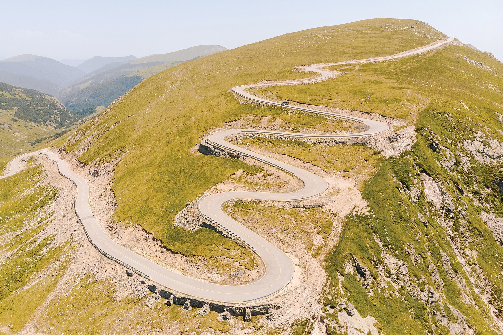

Transalpina

Transalpina (DN 67C) este un drum național din Munții Parâng, în Carpații Meridionali. Este cea mai înaltă șosea din România, având punctul cel mai înalt în Pasul Urdele (la 2.145 m). Drumul face legătura între orașele Novaci din județul Gorj și Sebeș din județul Alba. Fiind un drum montan, este închis pe perioada iernii.
Transalpina străbate patru județe – Gorj, Vâlcea, Sibiu, Alba – traversând Munții Parâng de la sud la nord, altitudinea cea mai mare având-o pe o porțiune de aproximativ 20 de km, în județele Gorj și Vâlcea, unde se prezintă ca o "șosea de creastă", trecând la mică depărtare de vârfurile Dengheru (2.084 m), Păpușa (2.136 m), Urdele (2.228 m), Iezer (2.157 m) și Muntinu (2.062 m).
Drumul nu este doar o arteră rutieră care traversează inima României, ci și o poartă către unele dintre cele mai impresionante peisaje montane ale țării. Traseul șerpuieste prin Munții Parâng, dezvăluind priveliști care rivalizează cu cele mai renumite destinații montane din lume.